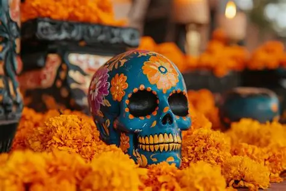

El regreso de las ánimas
Se cree que las almas reciben permiso para regresar al mundo terrenal, visitar a sus familias y convivir simbólicamente con ellas.
Una celebración mexicana que honra a quienes han partido y mantiene vivo su recuerdo mediante altares, flores, aromas, sabores y reuniones familiares.
Conocer la tradiciónEl Día de Muertos es una de las tradiciones más representativas de México. Se conmemora principalmente los días 1 y 2 de noviembre y consiste en un encuentro festivo y simbólico en el que los vivos recuerdan y honran la memoria de sus seres queridos fallecidos.
En esta celebración, la muerte se entiende como una etapa natural del ciclo de la vida. Según la tradición, las almas regresan para visitar a sus familias y disfrutar la esencia de los alimentos y ofrendas preparados en su honor.
Se cree que las almas reciben permiso para regresar al mundo terrenal, visitar a sus familias y convivir simbólicamente con ellas.
La festividad no busca solamente llorar la ausencia, sino celebrar la vida de quienes partieron y conservar su recuerdo.
Fortalece los vínculos familiares, preserva las tradiciones locales y fomenta la memoria colectiva de cada comunidad.
Algunas familias recuerdan a los animales de compañía que han formado parte de su hogar.
En ciertas tradiciones se recuerda a las personas fallecidas en accidentes o circunstancias violentas.
Las costumbres varían entre comunidades. Algunas recuerdan a las almas olvidadas, a quienes no tienen familia o a quienes murieron de determinadas maneras.
Algunas tradiciones dedican esta fecha a niños no bautizados y a bebés que no llegaron a nacer.
Generalmente se dedica al recuerdo de niñas y niños fallecidos, también llamados angelitos.
Es la fecha tradicionalmente dedicada a recordar a las personas adultas fallecidas.
Cada elemento posee un significado simbólico y ayuda a recibir, orientar y honrar a los difuntos durante su visita.



La comida funciona como un puente simbólico entre vivos y muertos. En la ofrenda se colocan alimentos representativos y los platillos que disfrutaba la persona homenajeada.
Es uno de los alimentos más representativos. Existen numerosas variedades regionales y puede prepararse con azahar, naranja, anís o azúcar.
Son un alimento festivo y comunitario. Pueden envolverse en hoja de maíz o de plátano, según la región.
Combina chiles, especias y otros ingredientes. El mole negro es especialmente representativo de Oaxaca.
Dulce elaborado tradicionalmente con calabaza de Castilla, piloncillo y canela.
Bebida caliente preparada con masa de maíz o fécula. Puede tener sabores como guayaba, fresa, chocolate o vainilla.
Caldo elaborado con maíz cacahuazintle y carne. Sus versiones más conocidas son blanca, roja y verde.
Dulces decorativos de azúcar que suelen llevar colores y nombres escritos con betún.
También pueden incluirse arroz con leche, frutas de temporada, enchiladas y diversos guisos familiares.
Diversos pueblos mesoamericanos realizaban ceremonias para recordar a sus muertos. La muerte se concebía como parte de un ciclo y no solamente como un final definitivo.
Después de la llegada de los españoles, las prácticas indígenas se relacionaron con las conmemoraciones católicas de Todos los Santos y los Fieles Difuntos.
La celebración actual es resultado de procesos históricos y de tradiciones regionales que continúan transformándose con el tiempo.
La flaca llegó cantando,
buscando a quien conversar;
te encontró siempre soñando
y te quiso saludar.
"Ven conmigo un ratito,
que traigo pan y café";
pero tú, muy tranquilito,
le dijiste: "¡Otro día, eh!"
La huesuda, divertida,
se sentó junto a tu mesa;
"Si no vienes en tu vida,
¡te llevo aunque te dé pereza!"
Y cuentan que en la vereda
la flaquita se quedó,
pues al ver tu gran flojera
¡hasta ella se arrepintió!

La figura que hoy conocemos como La Catrina se originó en La Calavera Garbancera, obra del grabador mexicano José Guadalupe Posada. Era una crítica satírica hacia quienes rechazaban sus raíces indígenas para aparentar una identidad europea.
Diego Rivera la representó vestida de cuerpo entero en el mural Sueño de una tarde dominical en la Alameda Central, realizado entre 1947 y 1948, y ayudó a popularizar el nombre de La Catrina.
Actualmente simboliza la igualdad ante la muerte y forma parte del arte, los desfiles, el maquillaje y las celebraciones del Día de Muertos.